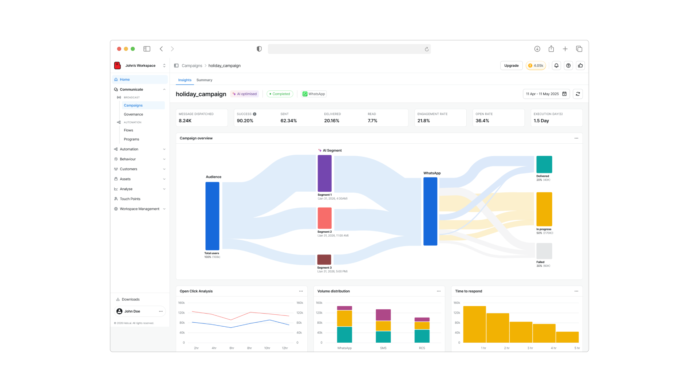
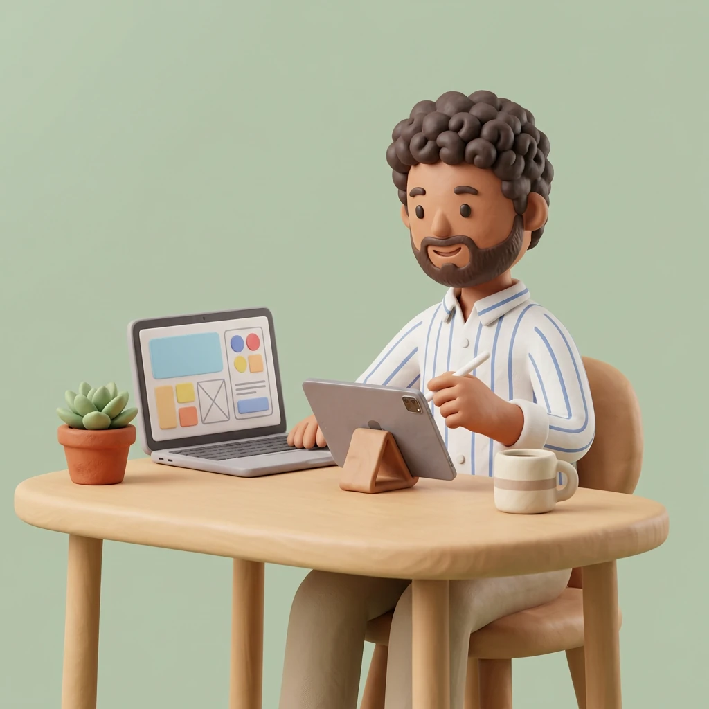
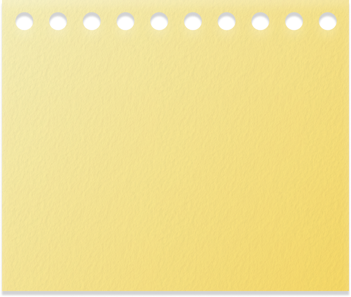
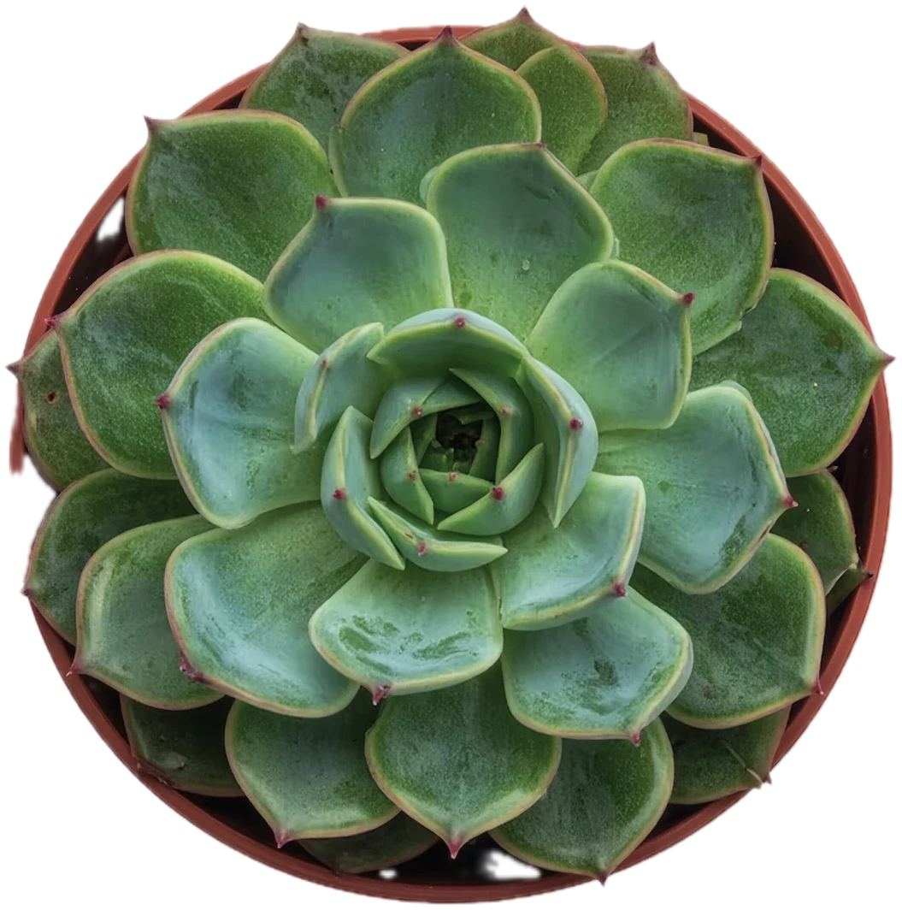
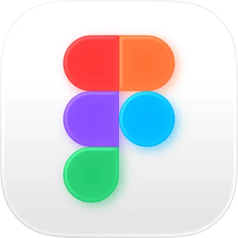
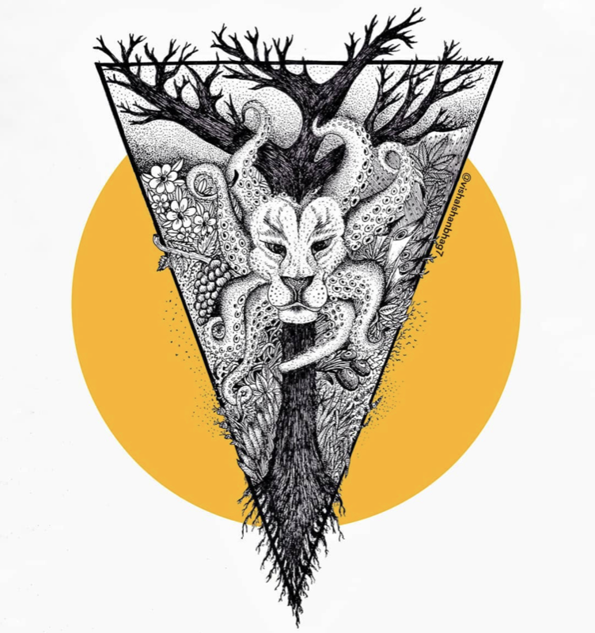
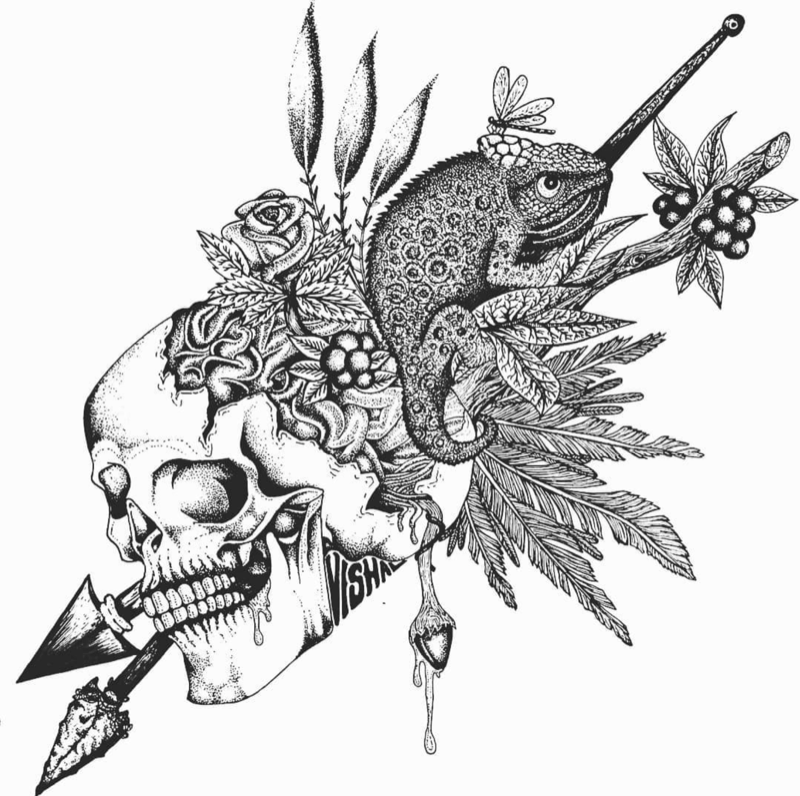

Helo clarity

Replacing manual workflows with AI-assisted ones for fewer errors and better productivity across every product.
Namaste, This is
CHAPTER 1
How to look at the world
Every idea you admire is built on something older. Before you can make work that feels like yours, collect the work you love, study how it was made, and keep a folder of the pieces that stop you in your tracks.
Copying is how every maker begins. Imitate one hero, then a second, then a third. Where those influences collide, your own voice starts to show.

Currently at Helo.ai

Solving complex problems thoughtfully, with a love for craft and good design in everything I make.



Replacing manual workflows with AI-assisted ones for fewer errors and better productivity across every product.
A workflow builder for launching and automating campaigns at scale.
Building a design system that scales faster and supports new products across teams.
Bringing fractionalized NFTs into a Web3 product and opening up a new kind of ownership.


I design for a living and experiment for fun — new art styles, new fashion, new recipes (the easy ones). Computer Science got me into tech; UX design got me hooked on solving problems that work for both users and businesses. When I'm not designing, I'm probably sketching, reading, or in the kitchen figuring out something low-effort but tasty.